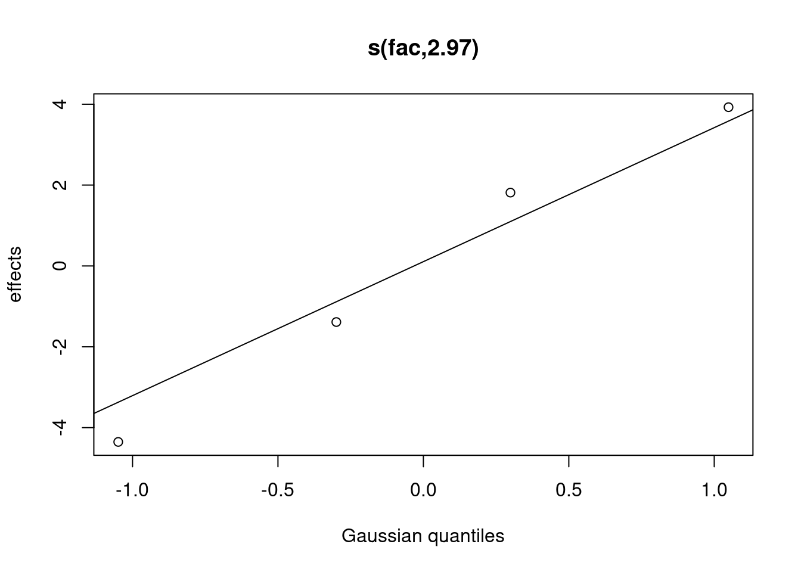
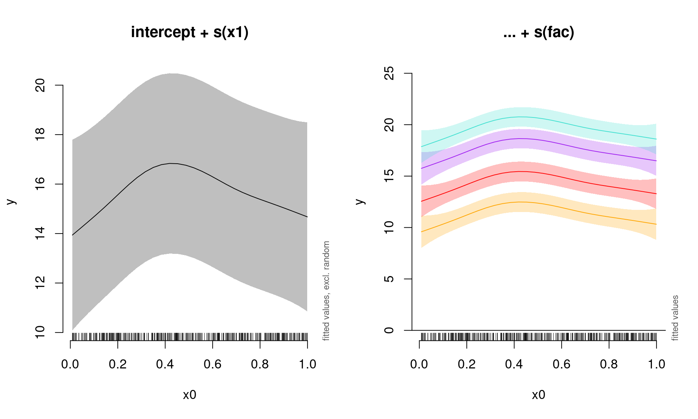
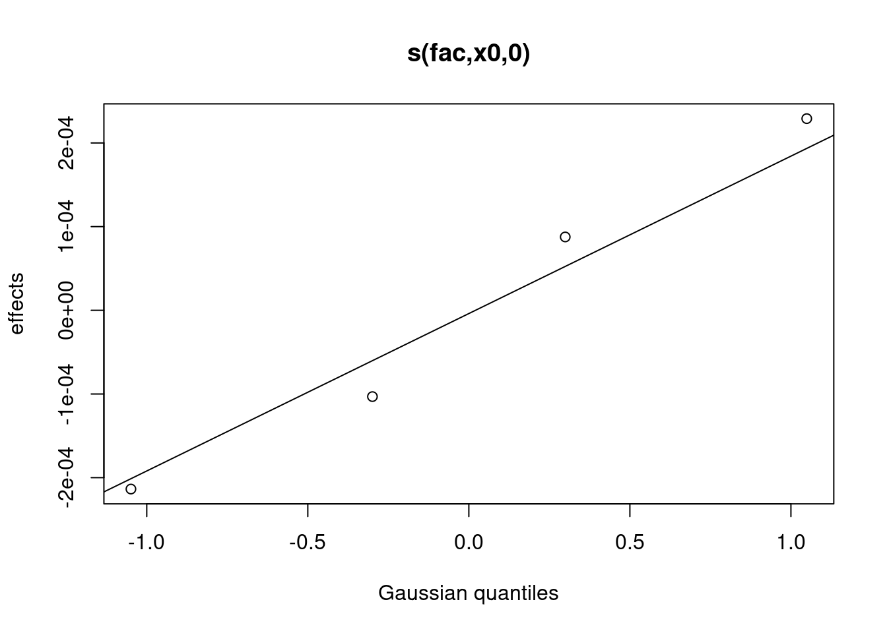

Chapter 11 Quick intro to Generalized Additive Mixed Models (GAMMs)
When observations are not independent, GAMs can be used to either incorporate:
- a serial correlation structure to model residual autocorrelation (autoregressive: AR; moving average: MA; or a combination of the two: ARMA),
- random effects that model independence among observations from the same site.
That is, in addition to changing the basis as with the nottem example, we can also add complexity to the model by incorporating an autocorrelation structure or mixed effects using the gamm() function in the mgcv package. Although we will not be using it here, the gamm4 package can also be used to estimate GAMMs in R.
11.1 Residual autocorrelation
To start, let’s have a look at a model with temporal autocorrelation in the residuals. We will revisit the Nottingham temperature model and test for correlated errors using the (partial) autocorrelation function.
par(mfrow = c(1, 2))
acf(resid(year_gam), lag.max = 36, main = "ACF")
pacf(resid(year_gam), lag.max = 36, main = "pACF")The autocorrelation function (ACF; first panel above) evaluates the cross correlation of a time series with itself at different time lags (i.e. similarity between observations at increasingly large time lags).
In contrast, the partial autocorrelation function (PACF: second panel above) gives the partial correlation of a time series with its own lagged values, after controlling for the values of the time series at all shorter lags.
The ACF and pACF plots are thus used to identify the time steps are needed before observations are no longer autocorrelated.
The ACF plot of our model residuals suggests a significant lag of 1, and perhaps a lag of 2. Therefore, a low-order AR model is likely needed.
We can test this by adding AR structures to the Nottingham temperature model. Let’s make one with an AR(1) (correlation at 1 time step) and one with an AR(2) (correlation at two times steps), and compare models using AIC to find a the best-fit model.
df <- data.frame(nottem, nottem_year, nottem_month)
year_gam <- gamm(nottem ~ s(nottem_year) + s(nottem_month, bs = "cc"),
data = df)
year_gam_AR1 <- gamm(nottem ~ s(nottem_year) + s(nottem_month,
bs = "cc"), correlation = corARMA(form = ~1 | nottem_year,
p = 1), data = df)
year_gam_AR2 <- gamm(nottem ~ s(nottem_year) + s(nottem_month,
bs = "cc"), correlation = corARMA(form = ~1 | nottem_year,
p = 2), data = df)Which of these models performs the best?
AIC(year_gam$lme, year_gam_AR1$lme, year_gam_AR2$lme)## df AIC
## year_gam$lme 5 1109.908
## year_gam_AR1$lme 6 1101.218
## year_gam_AR2$lme 7 1101.598The AR(1) provides a significant increase in fit over the naive model (year_gam), but there is very little improvement in moving to the AR(2). So, it is best to include only the AR(1) structure in our model.
11.2 Random effects
As we saw in the section about changing the basis, bs specifies the type of underlying base function. For random intercepts and linear random slopes we use bs = "re", but for random smooths we use bs = "fs".
There are three different types of random effects in GAMMs. Below, we use fac to indicate factor coding for the random effect, and x0 for a continuous fixed effect:
- Random intercepts adjust the height of other model terms with a constant value:
s(fac, bs = "re") - Random slopes adjust the slope of the trend of a numeric predictor:
s(fac, x0, bs = "re") - Random smooths adjust the trend of a numeric predictor in a nonlinear way:
s(x0, fac, bs = "fs", m = 1), where the argumentm = 1sets a heavier penalty for the smooth moving away from 0, causing shrinkage to the mean.
For more detailed explanations about random effects, see Workshop 7.
This is a (very!) brief overview of how you can use random effects in GAMMs. For further details, we really recommend Pedersen et al. (2019), which is a very accessible article outlining various ways to build GAMMs to answer ecological questions.
11.2.1 GAMM with a random intercept
We will use the gamSim() function to generate a dataset with a random effect, then run a model with a random intercept using fac as the random factor.
# generate and view data
gam_data2 <- gamSim(eg = 6)## 4 term additive + random effectGu & Wahba 4 term additive modelhead(gam_data2)## y x0 x1 x2 x3 f f0
## 1 11.882197 0.7307036 0.69049965 0.5515126 0.49625282 11.365369 1.4972950
## 2 14.669694 0.5192849 0.92477161 0.2742632 0.18344860 22.734237 1.9963305
## 3 11.431267 0.8875576 0.23306670 0.8367653 0.23513481 11.818570 0.6918944
## 4 15.233028 0.3082762 0.09836937 0.8181629 0.53884521 15.660683 1.6480491
## 5 7.712282 0.4449394 0.60797409 0.8761336 0.49338281 8.512315 1.9701531
## 6 14.043351 0.1084473 0.12196809 0.5850298 0.09497191 11.053744 0.6682889
## f1 f2 f3 fac
## 1 3.978876 2.8891984 0 1
## 2 6.356915 8.3809909 0 2
## 3 1.593820 0.5328558 0 3
## 4 1.217426 0.7952082 0 4
## 5 3.373491 0.1686705 0 1
## 6 1.276263 3.1091925 0 2# run random intercept model
gamm_intercept <- gam(y ~ s(x0) + s(fac, bs = "re"), data = gam_data2,
method = "REML")
# examine model output
summary(gamm_intercept)$s.table## edf Ref.df F p-value
## s(x0) 2.641003 3.277379 3.379355 0.01650611
## s(fac) 2.973318 3.000000 111.498964 0.00000000Note that there is now a smoother term for the random intercept in the
summary table. You can plot and view the random intercepts for each
level of fac as follows:
plot(gamm_intercept, select = 2)
# select = 2 because the random effect appears as the
# second entry in the summary table.We can also use the plot_smooth function to visualize the model, which allows us to plot a smooth of the
summed effects of a GAM (based on predictions). This function also optionally removes the random effects by setting rm.ranef = TRUE.
Here, we will plot the summed effects for the x0 without random effects, and then plot the predictions of all four levels of the random fac effect:
par(mfrow = c(1, 2), cex = 1.1)
# Plot the summed effect of x0 (without random effects)
plot_smooth(gamm_intercept, view = "x0", rm.ranef = TRUE, main = "intercept + s(x1)")
# Plot each level of the random effect
plot_smooth(gamm_intercept, view = "x0", rm.ranef = FALSE, cond = list(fac = "1"),
main = "... + s(fac)", col = "orange", ylim = c(0, 25))
plot_smooth(gamm_intercept, view = "x0", rm.ranef = FALSE, cond = list(fac = "2"),
add = TRUE, col = "red")
plot_smooth(gamm_intercept, view = "x0", rm.ranef = FALSE, cond = list(fac = "3"),
add = TRUE, col = "purple")
plot_smooth(gamm_intercept, view = "x0", rm.ranef = FALSE, cond = list(fac = "4"),
add = TRUE, col = "turquoise")
11.2.2 GAMM with a random slope
Next, we will run and plot a model with a random slope:
gamm_slope <- gam(y ~ s(x0) + s(x0, fac, bs = "re"), data = gam_data2,
method = "REML")
summary(gamm_slope)$s.table## edf Ref.df F p-value
## s(x0) 2.504655 3.105407 2.483728 0.06115122
## s(x0,fac) 2.963250 3.000000 84.750046 0.00000000We can once again plot the summed effects for the x0 without random effects, and then plot the predictions of all four levels of the random fac effect:
par(mfrow = c(1, 2), cex = 1.1)
# Plot the summed effect of x0 (without random effects)
plot_smooth(gamm_slope, view = "x0", rm.ranef = TRUE, main = "intercept + s(x1)")
# Plot each level of the random effect
plot_smooth(gamm_slope, view = "x0", rm.ranef = FALSE, cond = list(fac = "1"),
main = "... + s(fac, x0)", col = "orange", ylim = c(0, 25))
plot_smooth(gamm_slope, view = "x0", rm.ranef = FALSE, cond = list(fac = "2"),
add = TRUE, col = "red")
plot_smooth(gamm_slope, view = "x0", rm.ranef = FALSE, cond = list(fac = "3"),
add = TRUE, col = "purple")
plot_smooth(gamm_slope, view = "x0", rm.ranef = FALSE, cond = list(fac = "4"),
add = TRUE, col = "turquoise")11.2.3 GAMM with a random intercept and slope
We will now include both a random intercept and a random slope term.
gamm_int_slope <- gam(y ~ s(x0) + s(fac, bs = "re") + s(fac,
x0, bs = "re"), data = gam_data2, method = "REML")
summary(gamm_int_slope)$s.table## edf Ref.df F p-value
## s(x0) 2.626260 3.257655 3.263457 0.01992984
## s(fac) 2.901636 3.000000 584.876892 0.00000000
## s(fac,x0) 1.959820 3.000000 154.974015 0.13639670We can once again plot the summed effects for the x0 without random effects, and then plot the predictions of all four levels of the random fac effect:
par(mfrow = c(1, 2), cex = 1.1)
# Plot the summed effect of x0 (without random effects)
plot_smooth(gamm_int_slope, view = "x0", rm.ranef = TRUE, main = "intercept + s(x1)")
# Plot each level of the random effect
plot_smooth(gamm_int_slope, view = "x0", rm.ranef = FALSE, cond = list(fac = "1"),
main = "... + s(fac) + s(fac, x0)", col = "orange", ylim = c(0,
25))
plot_smooth(gamm_int_slope, view = "x0", rm.ranef = FALSE, cond = list(fac = "2"),
add = TRUE, col = "red")
plot_smooth(gamm_int_slope, view = "x0", rm.ranef = FALSE, cond = list(fac = "3"),
add = TRUE, col = "purple")
plot_smooth(gamm_int_slope, view = "x0", rm.ranef = FALSE, cond = list(fac = "4"),
add = TRUE, col = "turquoise")Note that the random slope is static in this case:
plot(gamm_int_slope, select = 3)
# select = 3 because the random slope appears as the third
# entry in your summary table.11.2.4 GAMM with a random smooth
Lastly, we will examine a model with a random smooth.
gamm_smooth <- gam(y ~ s(x0) + s(x0, fac, bs = "fs", m = 1),
data = gam_data2, method = "REML")## Warning in gam.side(sm, X, tol = .Machine$double.eps^0.5): model has repeated
## 1-d smooths of same variable.summary(gamm_smooth)$s.table## edf Ref.df F p-value
## s(x0) 2.515968 3.068245 2.471206 0.06159819
## s(x0,fac) 6.681839 35.000000 9.885637 0.00000000Here, if the random slope varied along x0, we would see different curves for each level:
plot(gamm_smooth, select = 1)
# select = 1 because the smooth slope appears as the first
# entry in your summary table.We can once again plot the summed effects for the x0 without random effects, and then plot the predictions of all four levels of the random fac effect:
par(mfrow = c(1, 2), cex = 1.1)
# Plot the summed effect of x0 (without random effects)
plot_smooth(gamm_smooth, view = "x0", rm.ranef = TRUE, main = "intercept + s(x1)")
# Plot each level of the random effect
plot_smooth(gamm_smooth, view = "x0", rm.ranef = FALSE, cond = list(fac = "1"),
main = "... + s(fac) + s(fac, x0)", col = "orange", ylim = c(0,
25))
plot_smooth(gamm_smooth, view = "x0", rm.ranef = FALSE, cond = list(fac = "2"),
add = TRUE, col = "red")
plot_smooth(gamm_smooth, view = "x0", rm.ranef = FALSE, cond = list(fac = "3"),
add = TRUE, col = "purple")
plot_smooth(gamm_smooth, view = "x0", rm.ranef = FALSE, cond = list(fac = "4"),
add = TRUE, col = "turquoise")11.2.5 GAMM model comparison
All of the mixed models from this section can be compared using AIC() to determine the best fit model
AIC(gamm_intercept, gamm_slope, gamm_int_slope, gamm_smooth)## df AIC
## gamm_intercept 8.111093 2224.323
## gamm_slope 8.104884 2271.032
## gamm_int_slope 10.846728 2223.057
## gamm_smooth 13.448309 2225.148The best model among those we have built here would be a GAMM with a random effect on the intercept.